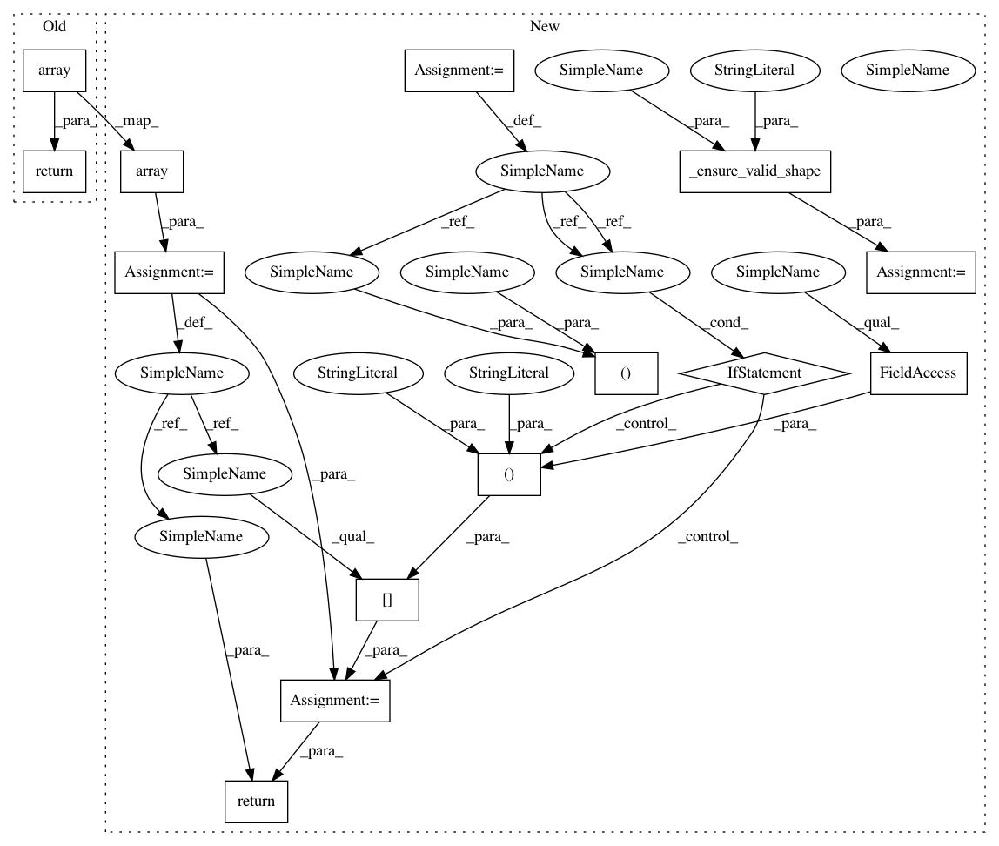

53d483264c15a1633e6c9590ea4fe07b6640bbf5,imgaug/augmenters/pillike.py,,warp_affine,#Any#Any#Any#Any#Any#Any#Any#Any#Any#Any#,1091
Before Change
matrix = matrix[:2, :].flat
// don"t return np.asarray(...) as its results are read-only
return np.array(
image_pil.transform(image_pil.size, PIL.Image.AFFINE, matrix,
fillcolor=fillcolor)
)
// we don"t use pil_solarize() here. but instead just subclass Invert,
// which is easier and comes down to the same
After Change
if 0 in image.shape:
return np.copy(image)
image, is_hw1 = _ensure_valid_shape(
image, "imgaug.augmenters.pillike.warp_affine()")
image_pil = PIL.Image.fromarray(image)
height, width = image.shape[0:2]
center_px = (width * center[0], height * center[1])
matrix = _create_affine_matrix(scale_x=scale_x,
scale_y=scale_y,
translate_x_px=translate_x_px,
translate_y_px=translate_y_px,
rotate_deg=rotate_deg,
shear_x_deg=shear_x_deg,
shear_y_deg=shear_y_deg,
center_px=center_px)
matrix = matrix[:2, :].flat
// don"t return np.asarray(...) as its results are read-only
result = np.array(
image_pil.transform(image_pil.size, PIL.Image.AFFINE, matrix,
fillcolor=fillcolor)
)
if is_hw1:
result = result[:, :, np.newaxis]
return result
// we don"t use pil_solarize() here. but instead just subclass Invert,
// which is easier and comes down to the same
In pattern: SUPERPATTERN
Frequency: 3
Non-data size: 14
Instances
Project Name: aleju/imgaug
Commit Name: 53d483264c15a1633e6c9590ea4fe07b6640bbf5
Time: 2020-01-07
Author: kontakt@ajung.name
File Name: imgaug/augmenters/pillike.py
Class Name:
Method Name: warp_affine
Project Name: aleju/imgaug
Commit Name: 53d483264c15a1633e6c9590ea4fe07b6640bbf5
Time: 2020-01-07
Author: kontakt@ajung.name
File Name: imgaug/augmenters/pillike.py
Class Name:
Method Name: _filter_by_kernel
Project Name: aleju/imgaug
Commit Name: 53d483264c15a1633e6c9590ea4fe07b6640bbf5
Time: 2020-01-07
Author: kontakt@ajung.name
File Name: imgaug/augmenters/pillike.py
Class Name:
Method Name: _apply_enhance_func
Project Name: aleju/imgaug
Commit Name: 53d483264c15a1633e6c9590ea4fe07b6640bbf5
Time: 2020-01-07
Author: kontakt@ajung.name
File Name: imgaug/augmenters/pillike.py
Class Name:
Method Name: warp_affine